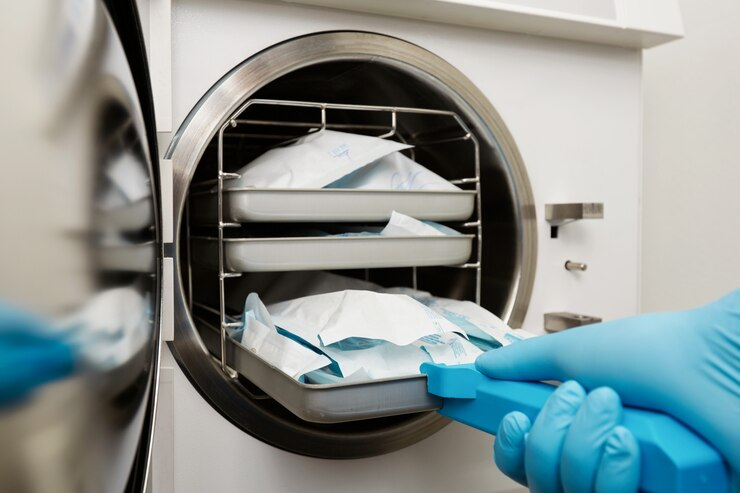
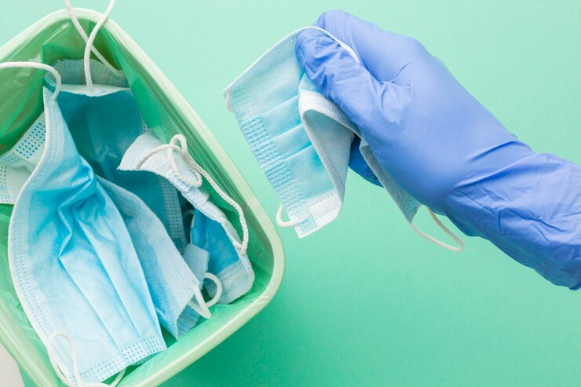

Medidas Essenciais

Higiene das mãos
Lavagem correta e uso de antissépticos.
Uso correto de EPIs
Equipamentos adequados para cada procedimento.

Esterilização de materiais
Uso de autoclave e cuidados no manuseio.

Descarte de resíduos
Separação correta de materiais contaminados.
Ambiente seguro
Limpeza e organização constantes do espaço.